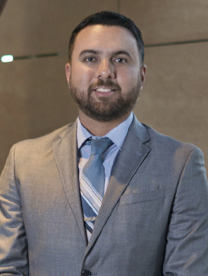

Odont. Carlos Aníbal
Sanabia Hurtado

Una solución en cada etapa
Venciendo las ideas preconcebidas, las nuevas técnicas en ortodoncia permiten a grandes y chicos disfrutar de hermosas sonrisas que funcionan a la perfección
Redacción BS
edicionrevistabs@gmail.com
Si bien por largo tiempo se consideró a los tratamientos de ortodoncia aptos sólo para adolescentes que ya contaban con su dentición permanente, descartando a los menores con dientes de leche y a los adultos, Carlos Sanabia, especialista en ortodoncia habló con Revista BS sobre la práctica de esta especialidad en el presente.
“Hoy en día ya hay más conciencia del cuidado de los dientes no obstante la edad del paciente; antes se pensaba que hasta que los niños mudaran totalmente de dientes se podía iniciar un tratamiento de ortodoncia, hoy hay avances y técnicas para hacer tratamientos preventivos y/o pediátricos”, expuso el entrevistado.
Así también, señaló, los adultos se descartaban a sí mismos para someterse a ortodoncia, sobre todo por vergüenza.
“Hoy todo eso se está quedando en el pasado, ya hay técnicas muy avanzadas que permiten realizar tratamientos prácticamente a cualquier edad; en mi consultorio se aplican estas técnicas, por mencionar una podemos hablar de los alineadores invisibles (Invisalign), una técnica relativamente nueva de 'brackets sin brackets', son dispositivos de ortodoncia plásticos, removibles, cómodos e higiénicos”, compartió.
Recomendaciones de experto
No obstante que la edad ya no es impedimento para someterse a un tratamiento de ortodoncia y lograr una dentadura sana y estética, es cierto que en términos de lo ideal, tratar y prevenir en la infancia es lo más recomendable, de acuerdo con el entrevistado.
“Una vez que tengan los dientes definitivos ya es buen momento para comenzar con una ortodoncia, si es necesaria, ya que es mucho más fácil y rápido solucionar los problemas en la boca de un niño que aún está en desarrollo”, subrayó. “es recomendable llevar a su hijo al ortodoncista, como muy tarde, a los seis años”.
El especialista hizo algunas recomendaciones para mantener la salud oral mientras se está en tratamiento de ortodoncia: utilizar un cepillo de cerdas suaves, cambiarlo cada tres o cuatro meses, usar pasta de dientes con flúor, que además de fortalecer sus dientes, ayudará a minimizar la sensibilidad que la ortodoncia pueda producir.
“Dividir su boca en cuatro partes: izquierda, derecha, superior e inferior. De esta forma se asegura de limpiar cada una de ellas, preste mucha atención a la sección que se encuentra alrededor y en el centro de los brackets, cuando use el cepillo interproximal insértelo desde la parte superior del alambre y luego desde la inferior”, indicó.
Complacido de brindar la oportunidad a sus pacientes de tener una sonrisa hermosa y, en general, una salud bucal integral, el especialista expresó: “Lo mejor de ser dentista es que nunca dejamos de ayudar y, mucho menos, de aprender”.